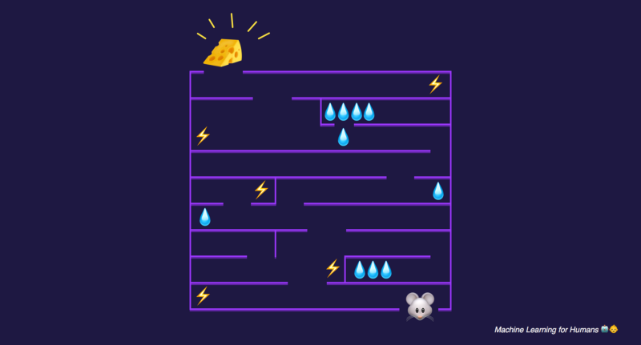
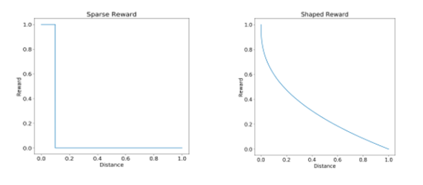

Bases théoriques
Paradigme
Formellement, la base du modèle d'apprentissage par renforcement consiste en :
- un ensemble d'états S de l'agent dans l'environnement.
- un ensemble d'actions A que l'agent peut effectuer.
- un ensemble de valeurs scalaires "récompenses" R que l'agent peut obtenir.
À chaque pas de temps t de l'algorithme, l'agent perçoit son état st et l'ensemble des actions possibles A(s_t). Il choisit une action a dans A(s_t) et reçoit de l'environnement un nouvel état s_t+1 et une récompense r_t+1. Fondé sur ces interactions, l'algorithme d'apprentissage par renforcement doit permettre à l'agent de développer une politique Pi (Une fonction qui prend en entrée un état et donne en sortie une action) qui lui permette de maximiser la quantité de récompenses. Cette dernière s'écrit R = r0 + r1 + ... + rn. Ainsi, la méthode de l'apprentissage par renforcement est particulièrement adaptée aux problèmes nécessitant un compromis entre la quête de récompenses à court terme et celle de récompenses à long terme.

L'agent observe l'environnement, effectue une action pour intéragir avec l'environnement et reçoit une récompense
Exemple concret
Le contexte le plus évident pour appliquer le Reinforcement learning est l'univers des jeux car ceux-ci contiennent des objectifs claires avec des scores. Par exemple, considérons le jeu suivant : on a une souris qui cherche à récupérer un bout de fromage qui représente sa récompense ultime (+1000 points) ou bien de l'eau qui représente une récompense intermédiaire (+10 points). Le bout de fromage se trouve au bout d'un labyrinthe et l'eau se trouve dans plusieurs endroits sur le chemin de la souris. En même temps, la souris doit éviter les choques électriques (-100 points).

Le fromage est la récompense
A chaque instant t:
- la souris observe son état (sa position)
- Choisie d'effectuer une action parmi plusieurs actions possibles : {avancer, reculer} si elle est dans un couloir ou {avancer, reculer, tourner à droite, tourner à gauche} dans un croisement.
- Change d'état (de position) suivant l'action qu'elle a effectuée.
- Reçoit une récompense : 0 si rien ne se passe, +10 si elle tombe sur de l'eau, -100 si elle subit un choque électrique et +1000 si elle arrive au fromage.
L'objectif du reinforcement learning est de trouver la politique/stratégie (le chemin) qui maximise le score de la souris. Si on veut que le chemin soit court en plus, il suffit d'amortir la récompense à chaque instant t en la multipliant par un certain coefficient.
Model-based learning & Model-free learning
Comme expliqué précédemment, quand un agent effectue une action il change d'état c'est à dire que son environnement change et il reçoit une récompense. Suivant le problème qu'on traite, on ne connaît pas toujours la manière dont change l'environnement ni comment est calculée la récompense. En d'autres termes, on a pas toujours un modèle qui permet de prédire l'état suivant et la récompense en fonction de l'état actuel ainsi que l'action prise.
Quand un tel modèle est connu ou quand on cherche d'abord à estimer ce modèle avant de chercher à optimiser la politique de l'agent, on parle de Model-based learning.
Certaines recherches ont montré qu'il n'est pas toujours nécessaire de connaître le modèle de notre environnement afin de trouver une politique optimale. Dans ce cas on parle de Model-free learning. Une des méthodes de Model-free learning les plus connues est le Q-learning qui cherche à évaluer l'utilité d'une action dans un état donné.
Types de récompense
La fonction de récompense est très importante dans les problèmes de reinforcement c'est ce qui définit l'objectif d'optimisation. On distingue 2 types de récompenses :
- Shaped reward
- Sparse reward
C'est la fonction la plus facile à traiter. C'est une fonction continue qui permet de générer à chaque instant t une récompense. Il est possible dans ce cas d'estimer directement l'utilité d'une action en observant le nouveau gain.
La forme de récompense la plus répandue mais la plus compliquée à résoudre. Correspond à une fonction en escalier, c'est à dire une fonction qui ne change que très rarement dans le temps. Reprenons l'exemple de la souris, tant que la souris ne tombe pas sur de l'eau, du fromage ou n'est pas électrocutée, la récompense reste stagnante. Cela veut dire qu'on peut effectuer plusieurs actions sans avoir une idée de leur utilité. Dans le cas extrême, la récompense ne change qu'à la fin du jeu (victoire/défaite).
